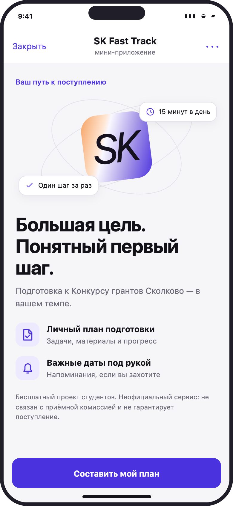
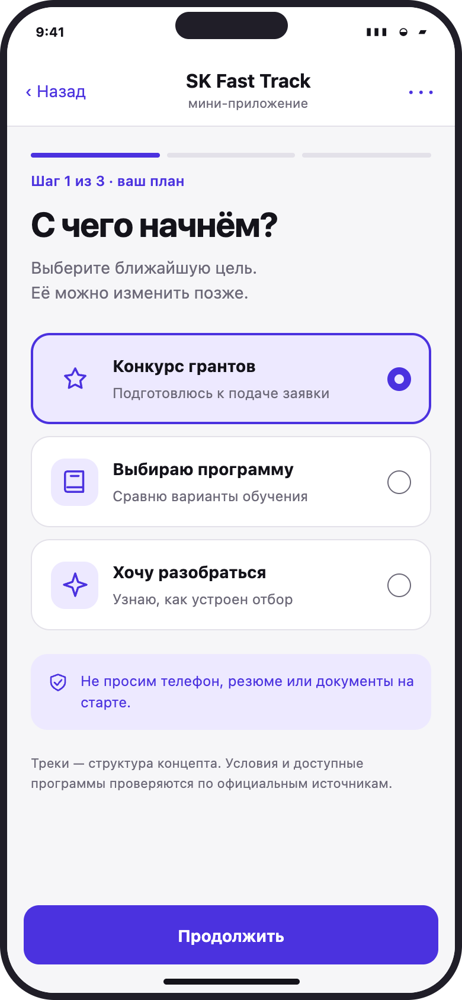
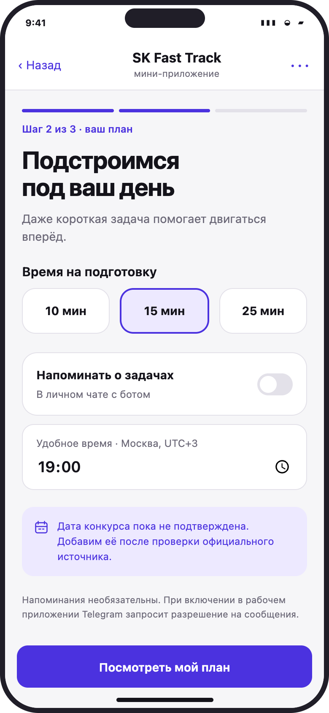
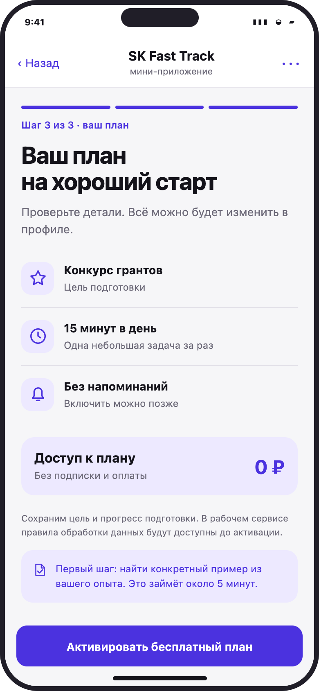
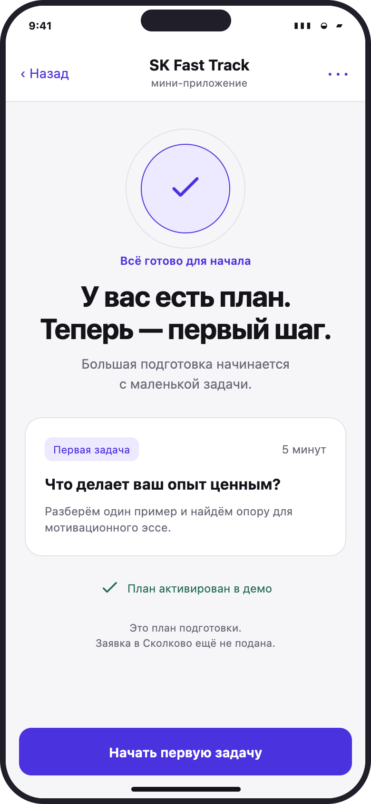
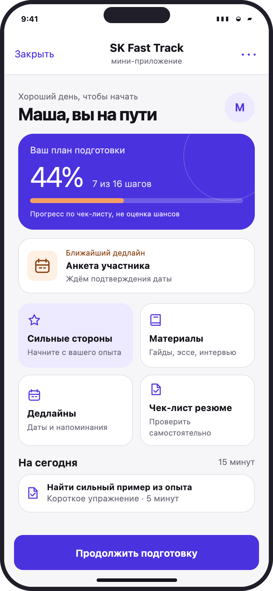
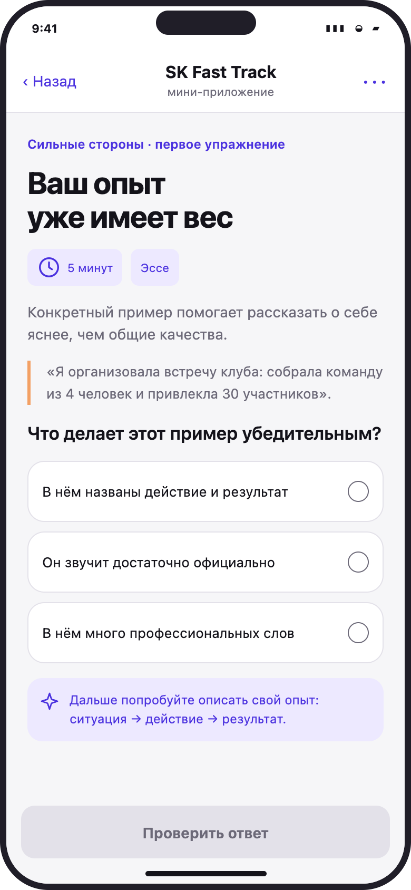
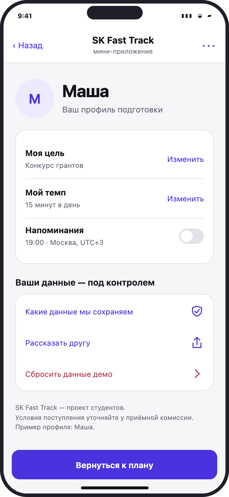

SK Fast Track. A plan you can start.
Russian UI · Telegram Mini App · Onboarding and first-value journey

01 / A welcoming first stepValue and trust before any questions
02 / Choose a goalStep 1 / one decision
03 / Set a realistic paceStep 2 / optional reminders
04 / Review the free planStep 3 / no payment barrier
05 / Confirm activationClear next action; no submission claim
06 / See the next stepChecklist progress with a useful task
07 / Experience first valueConcrete example, feedback and retry
08 / Stay in controlEdit preferences, privacy and sharingViolet focus · apricot milestones · quiet, rounded surfacesTelegram chrome simulated for review. Home uses illustrative returning-user progress.